Detailed Description
Detailed description FA 57
The FA 57 automatic transmission is an electronically-controlled 5-speed automatic gearbox with lock-up. The transmission casing constitutes one unit integrated with the engine, which is mounted transversely in the engine bay and drives the front wheels. The different gear positions, P-R-N-D-M+, M-, can be selected with gear selector mounted on a floor console between the front seats. Manual shifting can also be achieved using the buttons on the steering wheel (certain models).
The FA 57 is principally constructed around 4 planetary gear units, disc clutches, brakes, torque converter with lock-up coupling, which can be locked or allowed to slip in certain operating conditions, hydraulic and electronic control systems.
The transmission hydraulic system is controlled by a Control module TCM 502, which continuously processes information from its own sensors and other control modules.
The FA 57 has the following advantages over conventional hydraulic transmissions:
- Improved shifting performance and smoother shifting as torque is reduced when shifting takes place.
- Reduced mechanical stresses on the entire drive train due to torque limitation.
- Improved fuel economy through a consumption-optimized driving program and lock-up on 3rd, 4th and 5th gears. To further save on fuel, a certain slip is allowed in the lock-up clutch. This means that a difference in speed of 50-200 rpm is allowed between the engine speed and the speed of the input shaft. This results in the engine pulling longer with lock-up engaged (although slipping) so that the transmission need not engage an open gear (power through the torque converter) or shift down.
If the gearbox fluid temperature rises, a temperature-dependent program that protects the gearbox from heat damage is selected automatically. See "Gearbox Fluid Temperature" below.
- Possibility to change gear manually between 1st and 5th gears.
- Self-diagnosis and storage of diagnostic trouble codes.
- TCM sends and receives information from other control modules in the car through analogue signals and bus communication, see Brief description, bus communication.
The transmission control module (TCM) controls principally:
- Shift points
- System pressure
- Engagement of lock-up (fixed engagement or slip)
Transmission functions can be divided into three main groups:
- Electronic control system
- Hydraulic control system
- Mechanical
Electronic control system
The electronic control system comprises:
- Control module TCM (502)
- Shift lever module SLM (726)
- Transmission fluid temperature sensor (535)
- Speed sensor, input shaft speed (532)
- Speed sensor, output shaft speed (533)
- Gear selector position sensor (245)
- Bus communication
- Switch unit, steering wheel (633)
Transmission control module, TCM
The transmission control module controls principally the shift points, system pressure and lock-up. It has two 38-pin connections, K38 A and K38 B, and is located by the battery in the engine bay.
The control module is adaptive, which means it allows for normal internal wear in the transmission and compensates accordingly, giving comfortable shifting even at high mileage. The control module is also SPS programmable. This adaptive system means that TCM compares the current shifting performance with a shifting matrix programmed in the software and "learns" what is required by each shifting situation regarding pressure and duration so that the gears are shifted in a comfortable manner. The memory for this function, and for storing diagnostic trouble codes, is in an EEPROM, which means the information is retained even if the system voltage is cut off. This system entails zeroing the adaptation values in TCM using Tech 2 during repairs, SPS programming, changing gearbox or changing TCM. If this is not done, there is a risk for initial jerkiness when changing gear since the adaptation values learned by the TCM agree with one particular transmission at a time. In this case, TCM must "zero" itself and then adapt to the new conditions.
After zeroing with Tech 2, it will suffice with a normal test drive in normal conditions (about 10-15 min of varying driving) in order for TCM to be able to adapt to the new conditions. If necessary, there is a special driving schedule that can be used. Refer to Adaptation, resetting. Programming and Relearning
In other cases, e.g. during normal service of the car, the measures described above need not be carried out.
Shift lever module, SLM
SLM, Shift Lever Module, is located on the lever carrier and registers the lever movement with respect to shifting up and down, Park and M. SLM also controls the solenoid (439) used to lock and release the selector lever in positions P and N.
The ignition must be ON and the foot brake depressed (buss message from BCM (707)) before the SLM can activate the solenoid so that the lever can be moved. This is a safety system that prevents the car from moving inadvertently. SLM also turns on the P-R-N-D-M+, M- segments in the gear selector coulisse with regard to both the selected gear (bus from TCM) and general illumination. The brightness of the illumination follows that of the instrument illumination and is achieved by diodes. Four Hall sensors are integrated in the SLM for registering the lever position (P - M - M+ and M-).
If the gear selector lever is moved to position M, SLM will send a bus message and TCM is then receptive for shifting up and down. If the driver changes gear manually, a voltage signal is sent on a separate lead from SLM pin 7 directly to TCM pin 8 (A) as follows:
- Hold Gear, Voltage between 0.5V-1.4V
- Shift Gear -UP, (+) Voltage between 1.4V-1.79V
- Shift Gear -Down, (-) Voltage between 2.7V-3.5V
When the gear selector lever is in position M, the driver can also change gear manually on certain models using the buttons on the steering wheel, Switch unit, steering wheel (633). If this is done, communication concerning the selected gear takes place on the bus instead, SWC-CIM-TCM. If the driver touches the steering wheel buttons and the lever at the same time, TCM will give priority to the value from SLM. SLM is can communicate fully with Tech 2 and generates its own diagnostic trouble codes. SLM cannot be reprogrammed.
Transmission fluid temperature sensor
TCM uses information from the oil temperature sensor to:
- Control engagement and disengagement of lock-up. There will be no lock-up at temperatures below 20°C and no lock-up slip at temperatures above 40°C.
- To control the different temperature programs.
- To warn the driver of overheated transmission.
Oil temperature is also transmitted on the bus and is used by the engine management system to regulate the radiator fans. See temperature program below under "Gearbox Fluid Temperature".
Speed (rpm) sensor
TCM retrieves information on the speed of the input and output shaft respectively. These values are used for different purposes. The speed of the input shaft is continuously compared with the engine speed in order to control lock-up and to detect a slipping torque converter.
The speed of the output shaft, together with the accelerator pedal position, serves to provide information for when shifting is to take place. This value is also a measure of the vehicle speed. The speeds of the input and output shafts are also used to diagnose slipping friction elements and low oil pressure since a given gear ratio should always result in a certain speed ratio between the two shafts. This is continuously monitored by TCM, which generates a diagnostic trouble code if a fault occurs.
The engine management system has a pedal sensor that provides information on the position of the accelerator pedal. This information is available on the bus as "pedal position, unit %". When the pedal angle exceeds a certain value, the engine management system will send bus information "KICKDOWN ON", unit ON/OFF. TCM also uses the information on the pedal position to control shift points and when to activate lock-up.
In order to obtain smoother shifting and minimum transmission wear, TCM continuously sends information to the engine management system on the bus concerning "maximum torque", unit Nm. The engine management system uses this information in its air mass control for torque limitation. The current air mass/combustion is converted to torque, unit Nm. This information is sent continuously on the bus and TCM uses it to control system pressure. TCM continuously sends information on the selected "SELECTOR LEVER POSITION", unit P, R, N, D, M" to the bus, the value being used by the engine management system and MIU.
When selecting a selector lever position other than P or N, the requested air mass/combustion will be increased to compensate for the pending increase in load. The objective is to compensate for the increase in torque required by the automatic transmission in order to prevent a drop in idling speed before idle speed control has been able to compensate. The main instrument unit uses information on "SELECTOR LEVER POSITION" to turn on the relevant segment on the gear position indicator.
Gear selector position sensor
The gear selector position sensor is activated by the gear selector lever to register the selected gear and inform TCM of the result. TCM sends a bus message concerning the selected gear that is used by the engine management system, MIU, SLM and others.
Steering wheel buttons
Refer to Switch unit, steering wheel (633).
Hydraulic control system
The hydraulic control system comprises:
- oil pump
- valve housing with shift valves and accumulators
- clutches and brakes
Oil pump
The oil pump is of the gear type. Based on the pressure delivered by the pump and the selector lever position, the hydraulic control system governs the hydraulic pressure that affects the torque converter clutch and the other clutches and brakes in each particular case.
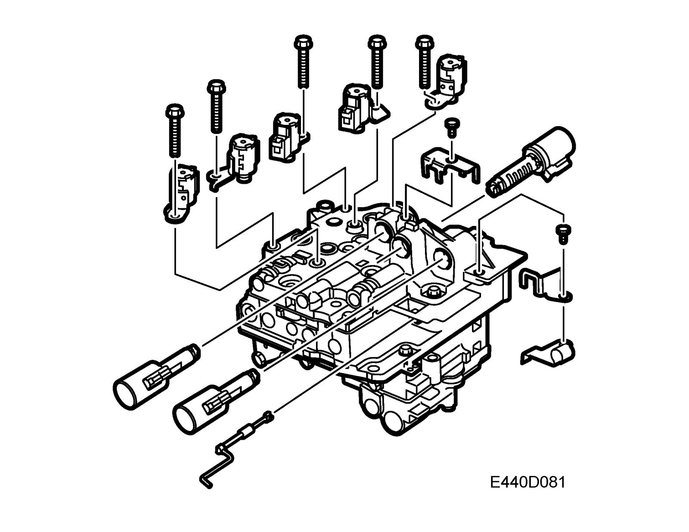
Valve housing
There are 8 solenoid valves on the valve housing. Solenoids S1-S5 are activated by current from TCM. The solenoids control the shift valves for gear changing. TCM uses information on the transmission output speed and the accelerator pedal position to change gear at the correct time. Solenoids SLU (Lock Up Linear Solenoid), SLT (Throttle Linear Solenoid) and SLS (Clutch Pressure Control Linear Solenoid) are controlled by a 300 Hz PWM signal from TCM.
SLU controls lock-up engagement and disengagement. SLT controls the transmission system pressure. SLS controls the oil pressure precisely to the clutches. This design offers a good possibility to control shift points and other functions thanks to software control in TCM.
B207E, B207L
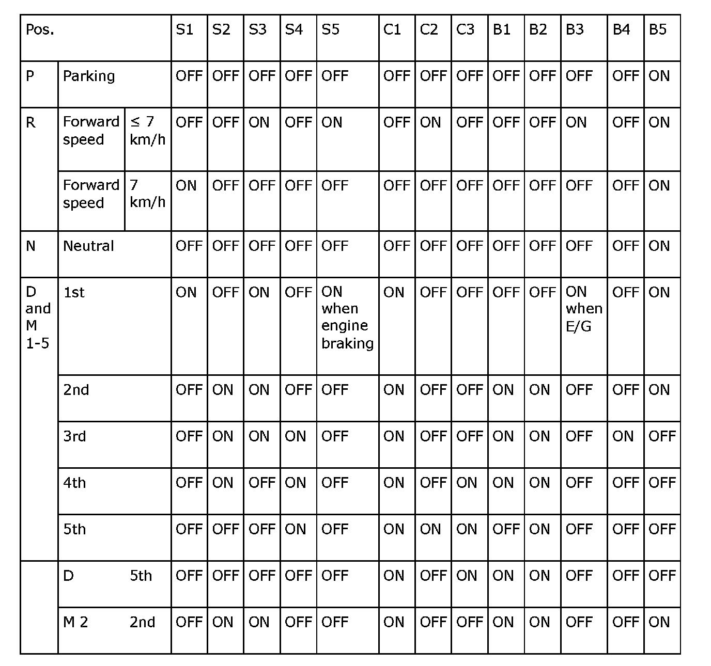
B207R
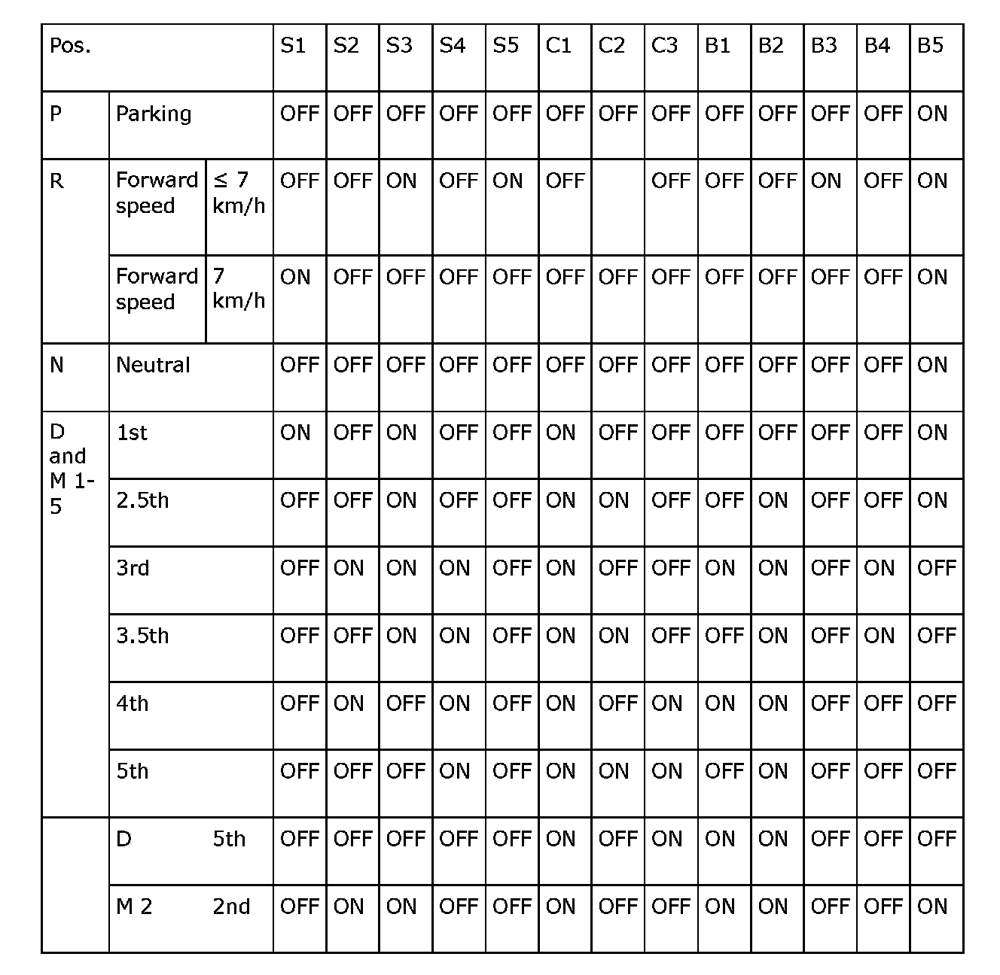
Mechanical
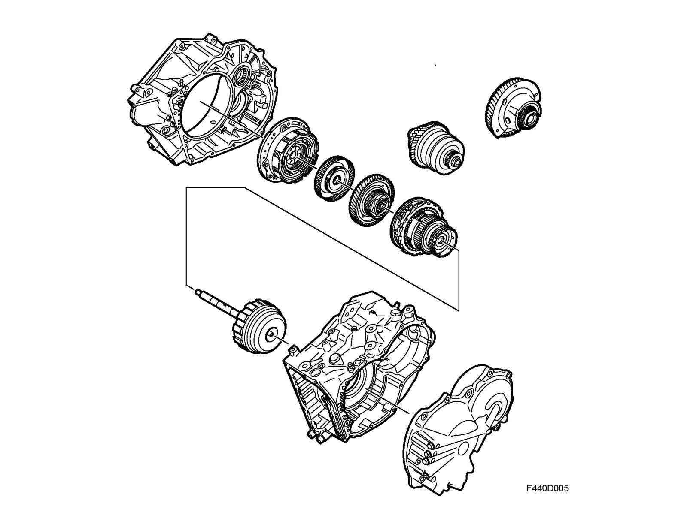
The mechanical systems comprise:
- Gearcase,
- Torque converter shell with torque converter
- Oil pump
- Valve housing
- Four planetary gears
- Three clutches
- Five brakes
- Differential
- Gear for transmission between input and output shafts
- Bearings of axial and radial type
- Two one-way drives (freewheel)
In order to generate different gear ratios, planetary gear components such as the sun gear, planet gear, ring gear and planet carrier are locked or released. All friction elements for this are disc-type except for brake B4, which is band-type. Because there are four different planetary gears, many different gear ratios are possible. See Planetary gear, description, animation.
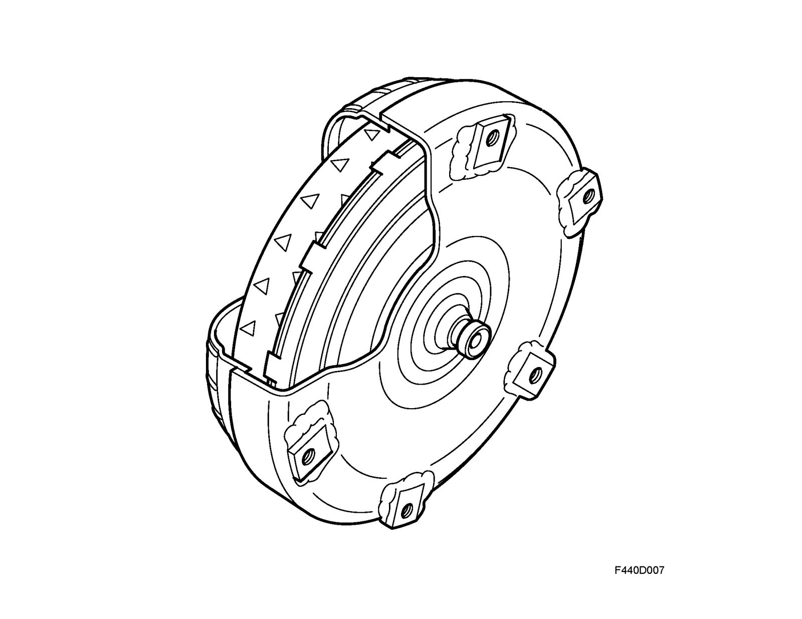
Torque converter
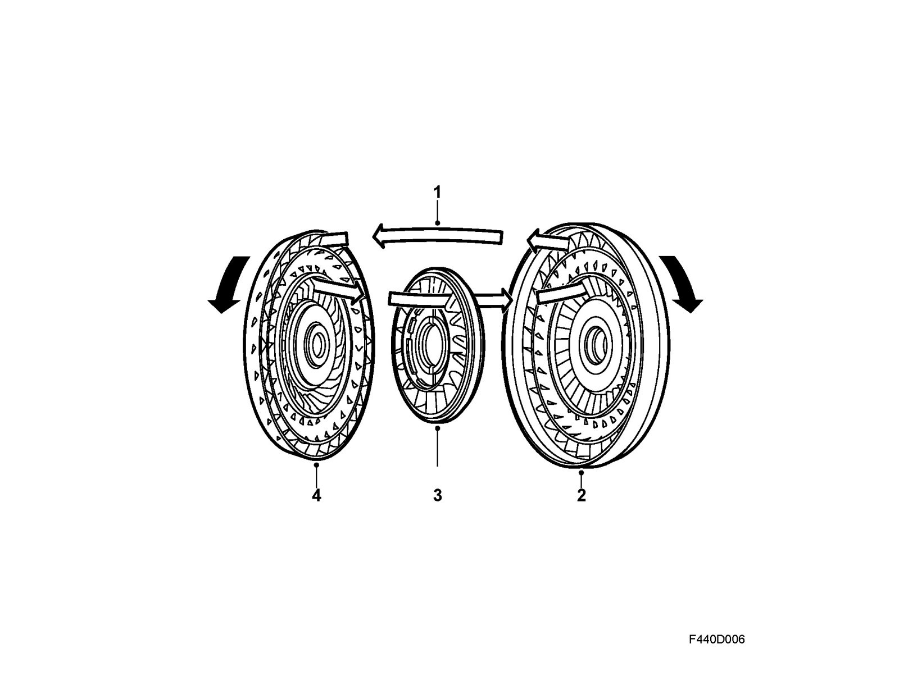
1. Oil flow
2. Pump
3. Stator
4. Turbine
User recommendations
The gear selector has six positions:
- P
- R
- N
- D
- M+ and M- (shift up and down respectively)
Selector lever position P
P may only be selected while the car is stationary. The gear selector is locked and the transmission blocked. The engine cannot start. The foot brake must be active before it is possible to move from P to another gear position.
Selector lever position R
R may only be selected when the car is stationary. This position cannot be selected without first holding in the detent and activating the foot brake. Do not start accelerating until the reverse gear function has had time to engage.
In order to prevent damaging the transmission, reverse gear cannot be engaged if the car is being driven forward at a speed exceeding 7 km/h. This is achieved by releasing brake B3 that is normally applied when reversing.
Selector lever position N
The transmission is in neutral when N is selected. The engine can be started. The hand brake must be applied to prevent the car moving. The foot brake must be applied before it is possible to move from N to any other gear position.
To avoid excessively high engine and transmission temperatures, N should be selected when the car is at a standstill for lengthier periods.
Important
Never select N when the vehicle is in motion. This can result in damaged ribs.
Selector lever position D
D is the normal driving position. When engaging a gear, which is only possible if the foot brake is applied, wait for a moment before accelerating so that the gear position has time to engage. The transmission will change gear automatically between gears 1-5. Shift points depend on accelerator position and vehicle speed.
Aero models (B207R) have a further two gear ratios: 2.5 and 3.5. These are fully software controlled. These ratios are achieved by a further solenoid combination between S1-S5. The ratios are only used during kick-down in fifth gear. The transmission shifts to 2.5 - 3.5 - 5. In other words, third and fourth gear are missed out in such cases.
Gear selector position M
Gear changes up and down are possible manually in M position by moving the selector lever to the left and then forward to change up and backward to change down (+ or -) provided TCM allows changing gear at the current speed.
TCM sends a bus message concerning the selected gear that MIU uses to indicate the gear on its display with an M and a number (1-5). This is shown during ordinary gear position display (P,R,N,D). The gear change must be completed before the next gear change can take place. TCM is consequently not able to store more than one gear change in memory at a time.
The throttle will react much faster when gear position M is selected, resulting in more powerful acceleration. When in M position, the transmission will stay in the current gear until a new impulse is given with the - or + position. The bus message is also used by SLM to turn on the symbol for manual shifting in the gear selector coulisse.
The following limitations and conditions have been introduced to increase road safety and to protect the engine and transmission:
- If the driver forgets or fails to change down even though the speed is far below the lower speed limit for the selected gear, TCM will automatically select a lower gear to avoid dangerous situations such as the driver attempting to pull away in fifth gear.
- If the driver requests kickdown in, for example, 5th gear and engine speed is below 2000 rpm, TCM will shift down to 4th gear to allow for overtaking or the like. If this occurs in 4th gear, 3rd gear is selected.
- Aero models (B207R) have a further two gear ratios: 2.5 and 3.5. These are fully software controlled. These ratios are achieved by a further solenoid combination between S1-S5. The ratios are only used during kick-down in fifth gear. The transmission shifts to 2.5 - 3.5 - 5. In other words, third and fourth gear are missed out in such cases.
- The driver can choose to pull away in first, second or third gear but not fourth or fifth. The gears can be changed up or down manually even when cruise control is on.
Towing
The following stipulations must be observed when towing a car that has automatic transmission:
- The car must only be towed in the forward direction (front wheels leading).
- The selector lever must be in position N.
- National stipulations concerning towing speeds must be observed. Legislation allowing, the maximum towing speed is 50 km/h. Maximum towing distance is 50 km and the front wheels of the car must be raised from the road if it is necessary to tow longer distances.
- The engine cannot be started by pushing or towing the car.
Gearbox Fluid Temperature
The control unit uses this information on the fluid temperature to -
- control the engagement and disengagement of Lock Up. Lock Up will not take place below 20°C. There will be no Lock Up slip below 40°C.
- control the different temperature programs.
- warn the driver that the transmission is overheated.
Temperature program 1
If the fluid temperature rises to 125°C, Lock Up will be activated more frequently to achieve a heat-reducing shifting program in 3rd and 4th gear. With Lock Up activated, there will be no torque converter slip, which means that the temperature will drop. Shifting points are also changed so that shift up takes place at a higher speed and shift down at a lower speed than with the normal program.
Temperature program 1 will not function when -
- limp home has been activated
Disengages when -
- the temperature has dropped to 120°C
Temperature program 2
If fluid temperature rises to 135°C, TCM activates a program that delays shifting points and causes more frequent Lock Up engagement so that the gear ratio reduces heat even more. An example of when this could occur is driving up an incline with a caravan connected. With Lock Up activated, there will be no torque converter slip, which means that the temperature will drop.
Temperature program 2 will not function when -
- limp home has been activated
Disengages when -
- The temperature has dropped to 127°C (then returns to temperature program 1)
If temperature exceeds 155°C for more than 2 s, TCM sends the bus message "TRANSMISSION OVERHEATING", which is shown in the SID display. In addition to the message, DTC P0218 is generated without the CHECK GEARBOX lamp lighting. This is only intended as information for the workshop. A gauge registers the excessive temperatures, which can later be read using the diagnostic tool. This could provide guidance if the customer were to complain about low engine output. Before the temperature message is shown in SID, torque sinks to 200 Nm in order to protect the gearbox from damage. This reduction in torque occurs at 150°C.
Special gear change program
Special gear change programs are selected automatically depending on the engine load. Gears are changed at higher engine speeds and the gear will remain engaged longer if the control module detects that the load is not getting lower. These gear change programs are used to avoid unnecessary gear changing when driving up long inclines with a trailer, for example, and to avoid overheating the transmission fluid.
Special gear change programs are not activated at speeds above 150 km/h. If a special gear change program is active when the speed increases above 150 km/h, the program will remain active until the control module ascertains that a more suitable gear change program can be activated.
Special gear change programs are deactivated if -
1. the ignition key is turned to OFF.
2. the load drops so much that the special gear change program is no longer needed.
3. CHECK GEARBOX lamp lights up.
Cooling system
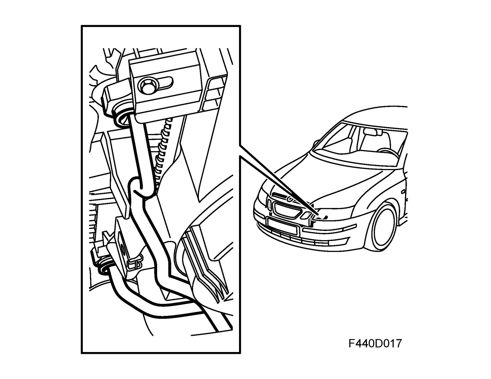
The automatic transmission is equipped with an oil cooler which is incorporated in the radiator, constituting one complete unit.
Fluid is circulated by the transmission fluid pump and carried via hydraulic hoses to the radiator and back to the transmission.
Differential protection system, DPS
On cars with automatic transmission, there is a function in Trionic that protects the differential in the transmission during extreme wheel spin. The function is active only at speeds below 80 km/h. This function is called DPS (Differential Protection System). DPS should not be confused with TCS.
The differential protection system reduces engine torque by limiting the air mass per combustion during extreme wheel spin. The principle is that a greater reduction in torque is obtained during extreme wheel spin and conversely, a smaller reduction in torque for slight wheel spin.
The bus message "Front wheel speed" is used as an input signal for the function.
If the difference between the two input signals exceeds the permitted, engine torque will reduced with a certain delay. For example, if the difference in speed from the sensors for "Wheel speed front" corresponds to a speed of 20 km/h, the maximum permitted engine torque will be 150 Nm.
Delay time is 1.5 s. TCS/ESP must be switched off in order for the function to be activated.
Electronic gear lever detent
When changing to R from D or M while the car is being driven over 7 km/h (4.3 mph), the control module solenoid S1 will be energized. This prevents reverse gear being engaged. (Brake B3 is released.)
The electronic gear lever detent is disengaged when the vehicle speed is below 7 km/h (4.3 mph) or when the selector lever is moved to any other position than R.
Electronic over-revving cut-out
To prevent the engine over-revving, the transmission control module is programmed with an electronic over-revving cut-out. This means that it is not possible to change down until the vehicle speed is below a certain value. See table.
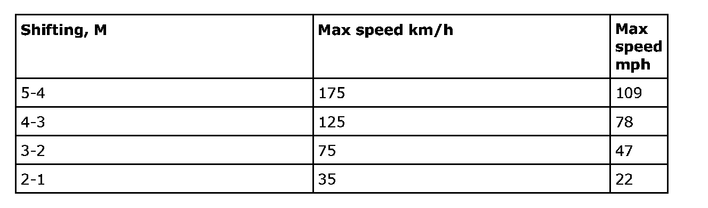
Limp home
In case of a serious system error such as a mechanical fault in the system input or output functions or an internal fault in the control module, all the control module functions will be disengaged and the control module will send the "CHECK GEARBOX ON" bus message, whereby the indicator lamp will come on in the main instrument unit. A fault code will also be generated.
In this situation the transmission will be controlled only by the hydraulic control system. This limits the transmission functions and the car can only be driven to a garage for repairs, hence the name Limp Home.
Limp-home mode provides the following gear positions:
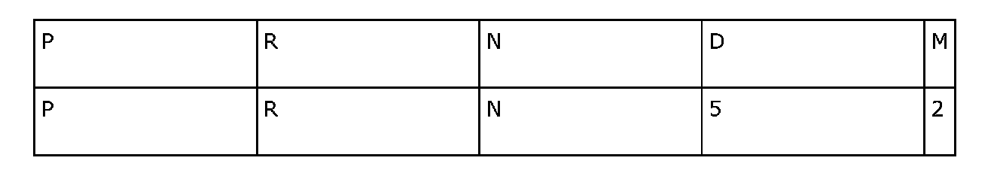
Note that 2nd gear must be selected manually in position M. The CHECK GEARBOX lamp will come on and a fault code will be stored.
Accelerator position
Trionic has an Accelerator position sensor (379), Petrol that provides information on the position of the accelerator pedal. This information is available on the bus; Pedal position, unit %.
The control module uses the information concerning the pedal position to control shifting points and determine when to activate the lock-up function.
Kickdown function
Trionic has a pedal sensor that provides information on the position of the accelerator pedal. When the angle of the pedal exceeds a determined value, Trionic will send bus information "KICKDOWN ON", unit ON/OFF. TCM uses this information to control the shifting points for maximum performance.
The kickdown function is available in all shifting programs.
Diagnostics
In the event of a malfunction, a diagnostic trouble code will be generated primarily in the Trionic system.
When bus communication with the Trionic system ceases, diagnostic trouble code P1921 will be generated and the transmission will go into Limp-Home mode.
Inaccurate information on the bus causes diagnostic trouble code P1971 to be generated. Depending on the fault, the TCM may activate the emergency operation program (Limp-Home mode).
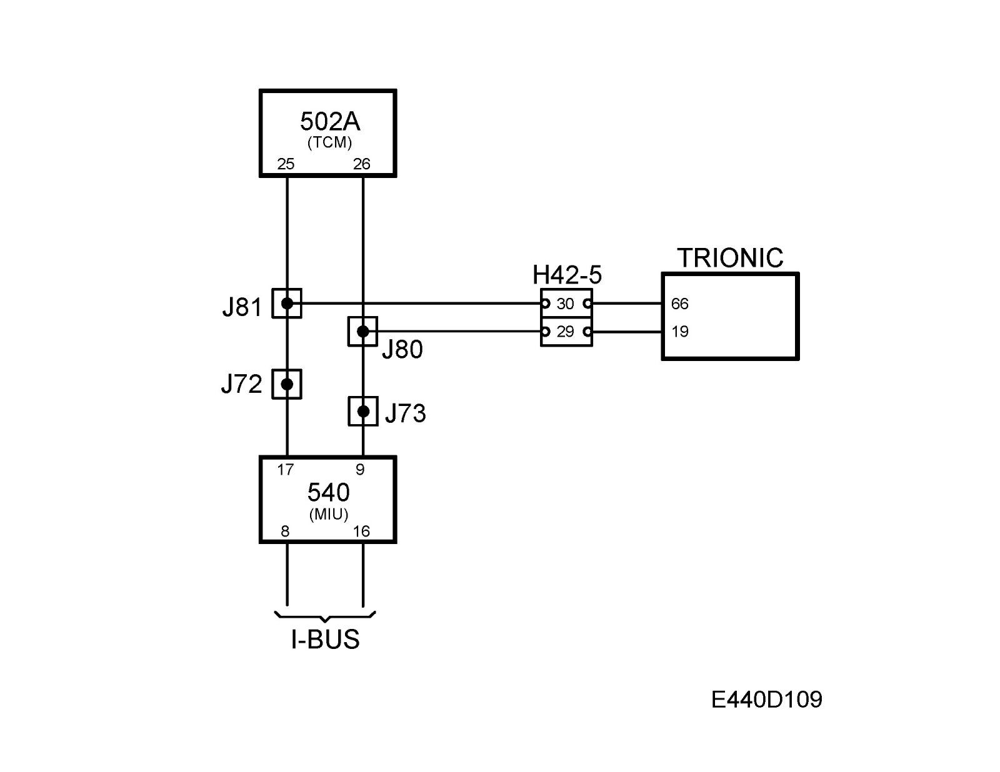
Engine torque
Current air mass/combustion is converted to torque, unit Nm. This information is sent continuously on the bus. TCM uses the information to control the transmission system pressure.
Diagnostics
A malfunction will generate a diagnostic trouble code primarily in Trionic.
When bus communication with the Trionic system ceases, diagnostic trouble code P1921 will be generated and the transmission will go into Limp-Home mode. Inaccurate information on the bus causes diagnostic trouble code P1971 to be generated. Depending on the fault, the TCM may activate the emergency operation program (Limp-Home mode).
Maximum permissible torque
In order to obtain smoother shifting and minimum transmission wear, TCM continuously sends information on the bus concerning "maximum torque", unit Nm.
As the transmission is designed to withstand a maximum torque of 300 Nm (B207E/L), TCM will normally send bus information "Maximum torque 300 Nm" but for some gear changes, especially during rapid acceleration, TCM will request a lower "Maximum torque" during the brief period that gear changing takes place.
The Trionic system uses the information in its air mass control circuit for torque limitation.
Power flow, gears
1st gear
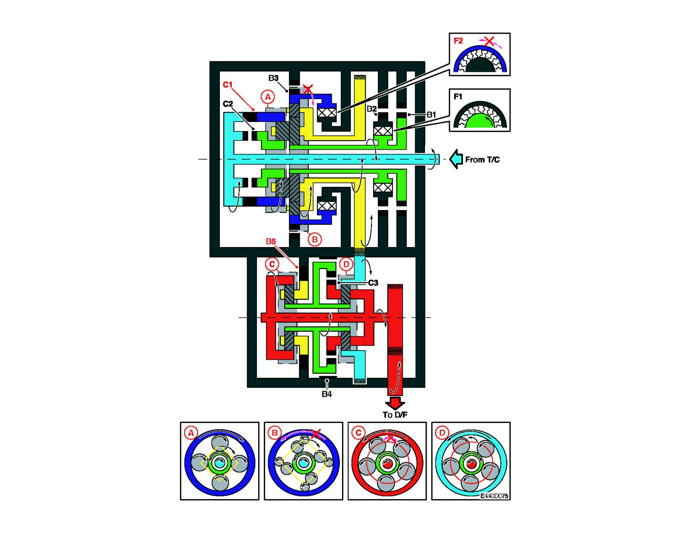
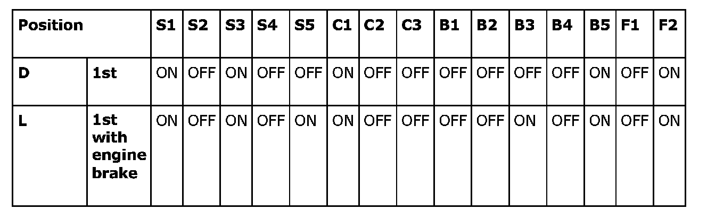
2nd gear
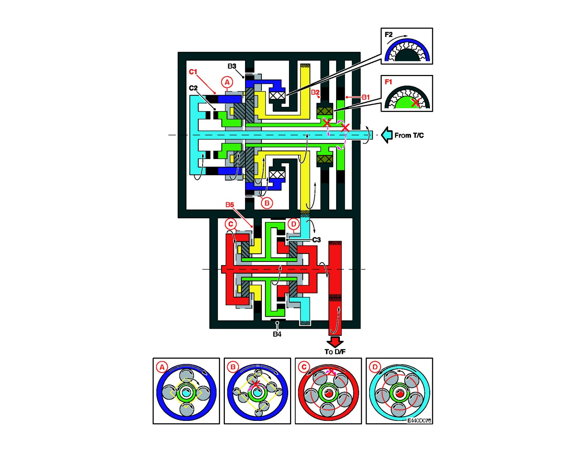
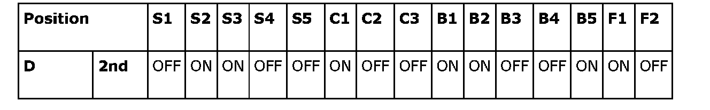
3rd gear
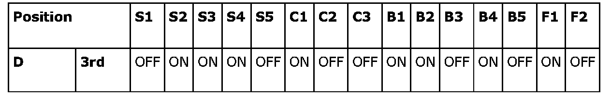
4th gear
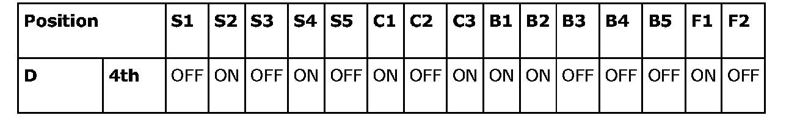
5th gear
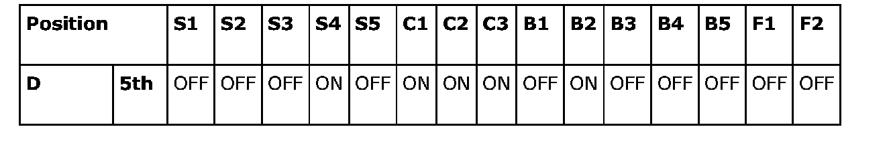
Reverse gear
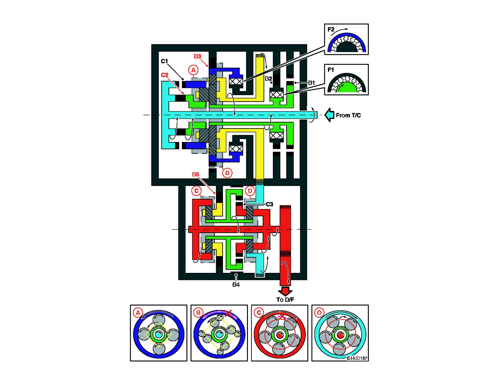
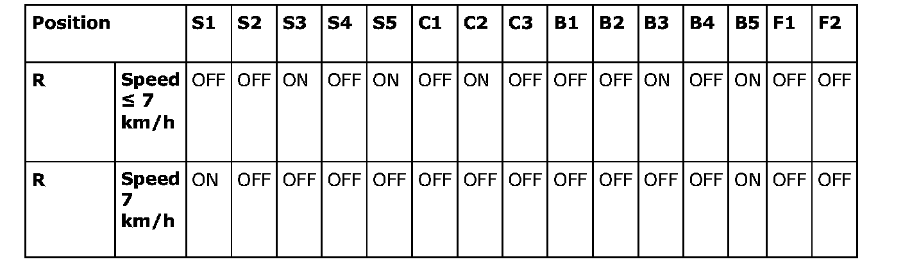